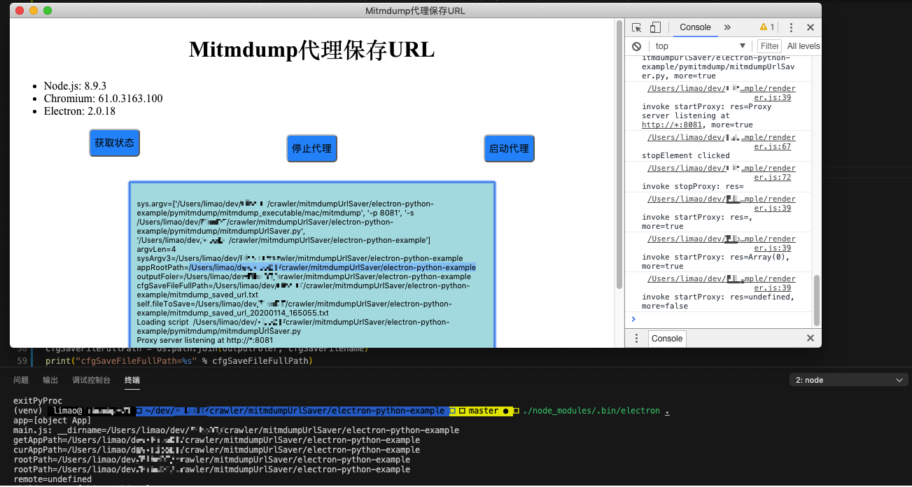
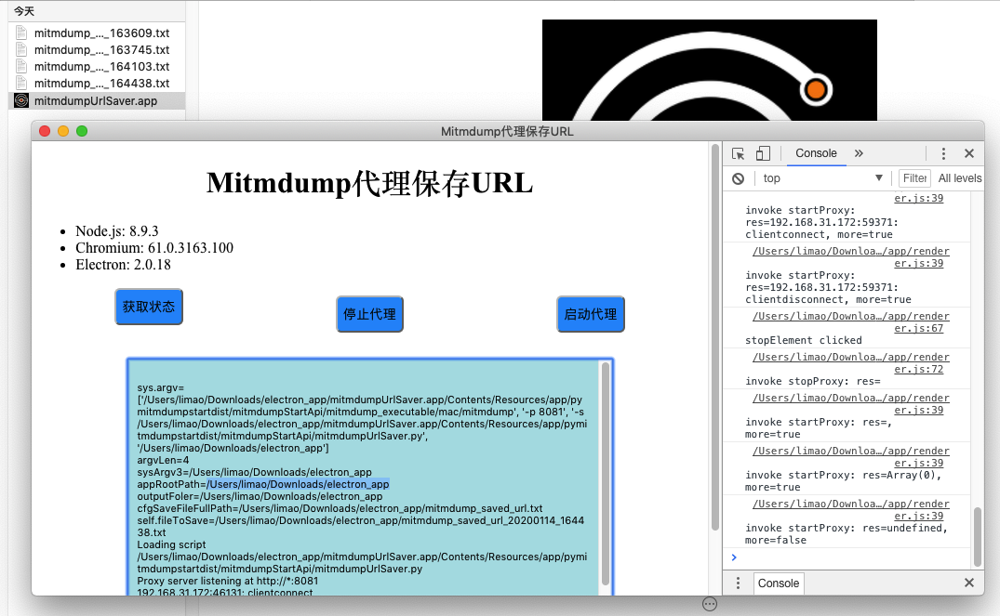

Mac系统
此处整理关于Mac系统中开发Electron的相关心得。
npm安装electron速度太慢
mac中npm install很慢，则可以去全局设置源，换成淘宝的源：
npm config set registry https://registry.npm.taobao.org/
npm config set ELECTRON_MIRROR http://npm.taobao.org/mirrors/electron/
且单独给electron的变量，加到启动脚本中：
vi ~/.zshrc
最后加上：
export ELECTRON_MIRROR=http://npm.taobao.org/mirrors/electron/
保存退出后，去立刻生效：
source ~/.zshrc
再去用echo验证：
# echo $ELECTRON_MIRROR
http://npm.taobao.org/mirrors/electron/
即可极大地提高 npm install去安装electron相关东西的速度。
比如此处是从<100KB/s 变成 > 1MB/s。
获取不到process.env的值
经过之前折腾：
【未解决】Mac中electron打包后process.env是undefined获取不到有效值
确定是：
Mac中，打包后的app在运行期间，无法获取到env变量：
process.env
或：
const remote = electron.remote;
remote.process.env
的值。-》也就无法获取到
process.env.NODE_ENV
或：
remote.process.env.NODE_ENV
的值了 -》 后续就没法通过别人说的：
const remote = electron.remote
let nodeEnv = remote.process.env.NODE_ENV
const isProd = remote.process.env.NODE_ENV === 'production'
let portableExecutableDir = remote.process.env.PORTABLE_EXECUTABLE_DIR
let initCwd = remote.process.env.INIT_CWD
去判断是否是生产环境，以及获取到有效的app可执行文件所在目录了。
获取Electron的app的根目录
此处是
文件：electron-python-example/main.js
const electron = require('electron')
const app = electron.app
console.log("app=%s", app)
console.log("main.js: __dirname=%s", __dirname)
console.log("getAppPath=%s", app.getAppPath())
// let curAppPath = app.getAppPath()
let curAppPath = __dirname
console.log("curAppPath=%s", curAppPath)
let rootPath = curAppPath
// // for debug:
// let rootPath = "/Users/limao/Downloads/electron_app/mitmdumpUrlSaver.app/Contents/Resources/app"
console.log("rootPath=%s", rootPath)
let removeAppSuffixP = /\/[^\/]+\.app\/Contents\/Resources\/app$/gi
rootPath = rootPath.replace(removeAppSuffixP, "")
console.log("rootPath=%s", rootPath)
通过调用：
const createSinglePyProc = (curScript, curPort, curDistFolder) => {
if (guessPackaged(curDistFolder)) {
curPyProc = childProcess.execFile(curScript, [curPort, rootPath])
console.log('execFile curPyProc=%s, from curScript=%s, curPort=%s, rootPath=%s', curPyProc, curScript, curPort, rootPath)
} else {
curPyProc = childProcess.spawn('python', [curScript, curPort, rootPath])
console.log('spawn python curPyProc=%s, from curScript=%s, curPort=%s, rootPath=%s', curPyProc, curScript, curPort, rootPath)
}
传入到Python端：
文件：electron-python-example/pymitmdump/mitmdumpStartApi.py
class MitmdumpStartApi(object):
def __init__(self, rootPath):
self.appRootPath = rootPath
logging.debug("self.appRootPath=%s", self.appRootPath)
@zerorpc.stream
def startProxy(self):
"""Start mitmdump proxy"""
logging.debug("startProxy")
from mitmdumpManage import startMitmdumpSaver
startResp = startMitmdumpSaver(self.appRootPath)
def main():
rootPath = sys.argv[2]
logging.debug("rootPath=%s", rootPath)
zerorpcServer = zerorpc.Server(MitmdumpStartApi(rootPath))
传递给：
文件：electron-python-example/pymitmdump/mitmdumpManage.py
def startMitmdumpSaver(appRootPath):
"""Start mitmdump saver"""
logging.debug("startMitmdumpSaver")
logging.debug("appRootPath=%s", appRootPath)
# electron not package: /Users/limao/dev/xxx/crawler/mitmdumpUrlSaver/electron-python-example
# electron packaged: /Users/limao/Downloads/electron_app
...
shellCmdList = ['%s' % gConfig["mitmdumpExecutable"], '-p %s' % gConfig["port"], '-s %s' % gConfig["mitmdumpScript"], appRootPath]
在启动了mitmdump后，是通过：
文件：electron-python-example/pymitmdump/mitmdumpUrlSaver.py
def getOutputFolder():
print("sys.argv=%s" % sys.argv)
argvLen = len(sys.argv)
print("argvLen=%s" % argvLen)
if argvLen >= 4:
sysArgv3 = sys.argv[3]
print("sysArgv3=%s" % sysArgv3)
appRootPath = sysArgv3
print("appRootPath=%s" % appRootPath)
outputFoler = appRootPath
else:
outputFoler = os.path.dirname(__file__)
return outputFoler
outputFoler = getOutputFolder()
print("outputFoler=%s" % outputFoler)
中的sys的argv[3]，最终得到了此处的app的root的path路径：
- 开发环境=本地调试环境：
/Users/limao/dev/xxx/crawler/mitmdumpUrlSaver/electron-python-example- 
- 生产环境=打包发布app后：
- 当前app运行路径：
/Users/limao/Downloads/electron_app - app的root路径：
app.getAppPath = /Users/limao/Downloads/electron_app/mitmdumpUrlSaver.app/Contents/Resources/app- 
- 当前app运行路径：